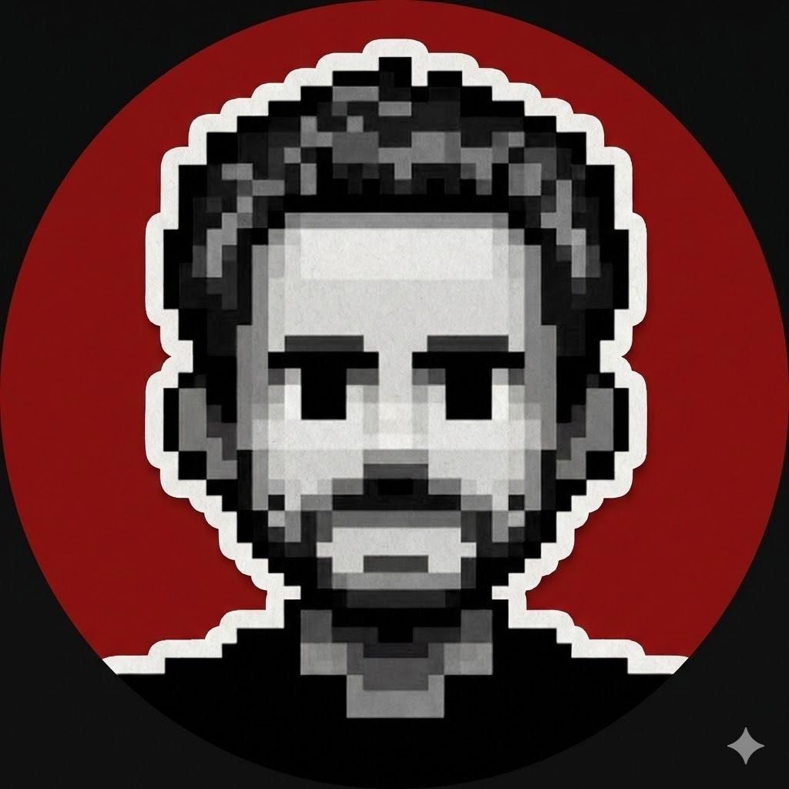

Umut Çelik
Full-stack Developer · AI Agents & Automation
Building tools at the intersection of AI agents, automation, and clean software. Currently diving deep into Rust, Tauri, and agentic AI systems.
github.com/palamut62
Full-stack Developer · AI Agents & Automation
Building tools at the intersection of AI agents, automation, and clean software. Currently diving deep into Rust, Tauri, and agentic AI systems.
github.com/palamut62